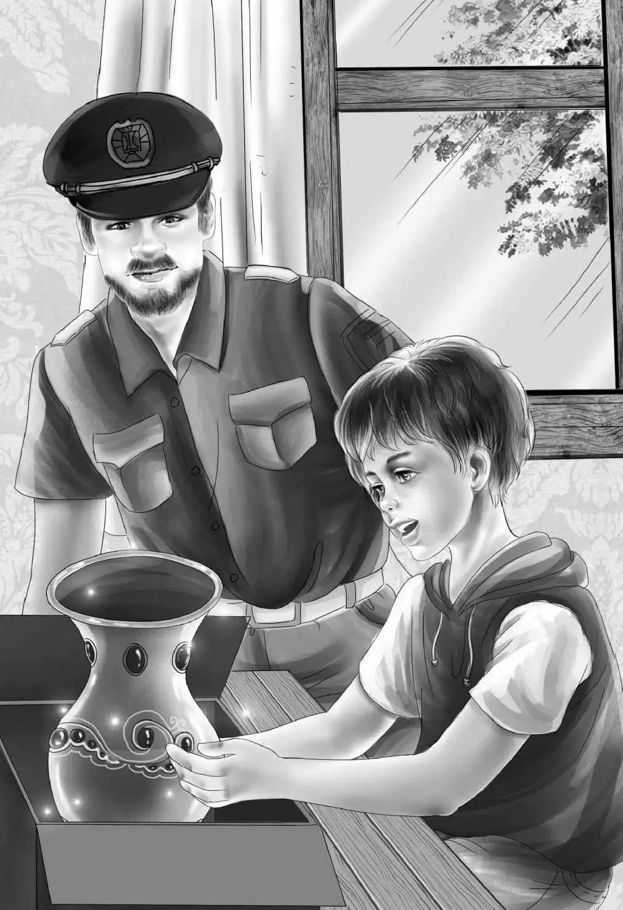

Chapter 9 The Plan
一家人走进拍卖会场，却发现门敞开着，里面没人。
“今天没有拍卖会，”班尼说，“今天不是星期六啊！”
“哦，那咱们找找，看有没有能求助的人。”杰西说，他们五个人沿着大路慢慢地往前走，寻找着警察的身影。因为没有拍卖会，街上的人不多。
“那不是榆树小馆吗？”维莉指着前方。
班尼兴奋地叫了起来：“快看，那个戴红帽子的小男孩，他正在往小馆里走呢！”
“不对啊，小班班，”杰西说，“那孩子没戴帽子，而且看着也不像红帽小男孩。”
“我觉得像！”班尼说，“咱们进去看看吧！”
一家人走了进去，餐厅里没有人，但是班尼和维莉都看到，那个男孩走进了一扇后门。
“嘿，等等！”班尼喊道，“就耽误你一分钟，拜托了！”
男孩半转过身子，停住了脚步。
亨利说：“没事的，别怕，你是扬格太太的儿子，对吗？”
男孩抬起头来：“那又怎么样？你们想干什么？”
“我们在找警察。”杰西说道。
“我帮不了你们。”男孩说。
“你不就是在拍卖会上拍下了一箱衣服的那个男孩吗？”班尼问，“我们当时也在场。”
男孩什么也没说。
“你要那些衣服干吗？”维莉禁不住问，“你要穿吗？”
“谁稀罕那些旧衣服？”男孩冲口而出，“我们可没穷到那个分上。是一个先生让我帮他买的，他说自己太忙了，去不了拍卖会。”
“他付钱让你这么做的吗？”班尼问道。
“是不是给了你25美元？”亨利继续追问。
男孩看着奥登一家，他觉得自己可以相信眼前的这些人，“是的，没错！不过，我没干什么坏事，只是买了那个盒子，把它交给了那位先生。这没什么大不了的吧？”
“当然，”班尼回答，“不过你之后再见过那位先生没？”
“见过，”男孩说，“我今天还在公主酒店见到他了呢！他正和另一位先生聊天。没等他发现我，我就跑掉了，我可不喜欢他。”
“这怪不得你！”班尼说，“现在可以告诉我们在哪儿能找到警察吗？”
这一次，男孩点了点头，“在市政厅有两个。”
班尼问道：“对了，你怎么会在这儿？”
“妈妈在旅馆的厨房里呢，她来这里卖糖果。”
“那你问问她，看她愿不愿意和我们聊聊。”杰西说。
话音刚落，门就开了，扬格太太从厨房里走了出来，“你们说的话我全都听见了，还好汤姆没有惹上麻烦。”
奥登一家站起身，奥登先生为扬格太太拿了一把椅子。
维莉说：“这附近还有不少遇到麻烦的人们，我们都会尽力帮助他们的。”
亨利对汤姆说：“你能从后门出去，找个警察，再把他从后门悄悄带进来吗？”
“小菜一碟！”汤姆·扬格说，“我会告诉警察，是船屋上的人在找他们。”说完，便一溜烟飞奔而去。
“他早知道咱们是谁了！”班尼说。
“大家都认识你们，”扬格太太说，“河沿岸的几个镇子都小得很，你们靠岸过夜的那一晚，几乎所有人都知道你们的名字啦。”
正在这时，有几个人从外面经过，朝窗子里看了看。
奥登先生赶紧说：“在警察来之前，我们能不能先待在厨房里呢？我们在这儿很容易被人看到。”
“嗯，没问题，”扬格太太回答，“这家店的女主人不会介意的。她会让你们坐在那个小包间里，穿过这扇门就到了。”
不一会儿，汤姆和一个警察走了进来。
“请坐，”奥登先生打了声招呼，“很高兴见到你！请看看这个吧！”他指向班尼的方向。
警察把目光投向班尼，只见班尼打开速食土豆的盒子，伸手进去，把花瓶拿了出来。
“哟！”警察惊呼，“是那只花瓶！你们从哪里找到的？”
于是，班尼把找到花瓶的经过绘声绘色地讲述了一遍，听完后，警察赶紧问道：“有别人知道你们找到了这只花瓶吗？”
“没人。”班尼回答。
“很好！”他说，“没人知道就好。藏花瓶的人肯定以为它还在沙箱里埋着呢。不错，我和你们的想法一样，应该是两个人干的，估计其中一个把花瓶藏到了那箱旧衣服里。”

班尼点点头，“然后又花钱让汤姆买下那个箱子，交给他们。”
“没错！”警察说，“而且，他们还得把花瓶藏起来，于是就选中了你们的船屋。”
杰西说：“难怪我们去海鸥岛停留的时候，有两个人一直在监视我们。他们那时候已经准备逃出镇子，就想趁我们离开船屋的几分钟时间，上船拿走花瓶。”
班尼激动地喊道：“我们可以给他们设个圈套！先让所有人都以为我们在岸上过夜，这样的话，那两人肯定就会趁机上船拿回花瓶，那就可以把他们逮个正着。”
“这个计划不错！”警察轻笑一声说，“你们应该一起过去，看坏蛋是怎么落网的。”
然而，班尼的回答却让大家很意外，“不，我再也不想看见那两个人了。就是不想去！”
“你可以不用去，”警察说，“不过你的哥哥可以和我们一起去吧？我们需要有人带路啊！”
“没问题，”亨利说，“我愿意。”
“咱们这么办吧！”杰西说，“我们先到大街上去，让大家都以为我们正在榆树小馆吃晚饭，接着，我们再去看电影。”
“好主意！”警察说，“在这个地方，消息都是插着翅膀的呐！亨利，晚饭过后，你就从后门上船，约翰·德·洛萨船长和我会在那里等你，然后咱们伺机行动。”
杰西笑了起来：“只要班尼留下来，所有的人都会觉得我们全家都在这儿。”
于是，奥登一家人说说笑笑地走出了榆树小馆。他们把街上的小店挨个逛了一遍，同时商量着下一步的安排——他们会在小馆里吃晚饭，接着去看电影，并且到处打听最近上映了什么电影。
镇上的人微笑着告诉他们电影的信息，因此到了吃饭的时候，所有人都已经知道，船屋上的那一家人来到了镇上，并且打算在镇上过夜。但谁会把这个消息传到公主酒店那两个男人的耳朵里呢？没人知道。
奥登一家人的餐桌位于餐厅正中，美餐之后，亨利一言不发，悄悄地溜出厨房，神不知鬼不觉，快步朝船屋赶去。奥登家的其他人朝着电影院的方向出发了，他们脑子里想的不是将要放映的电影，而是即将在船屋上发生的一切。